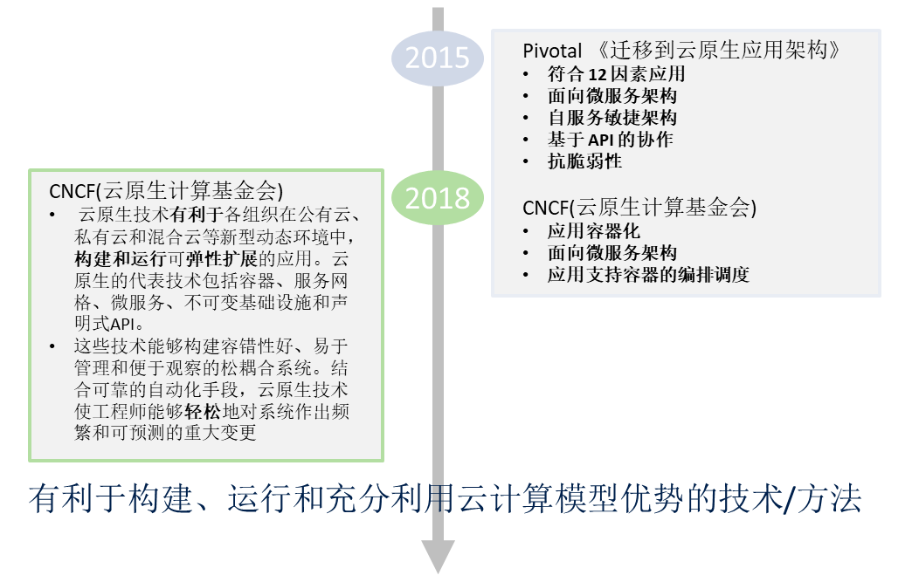
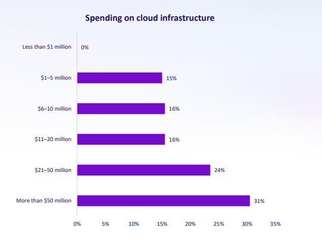
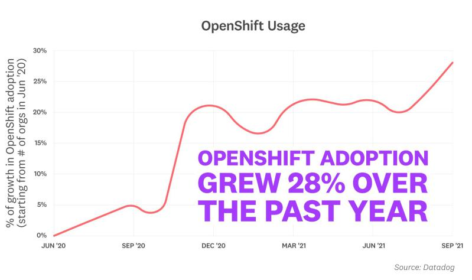
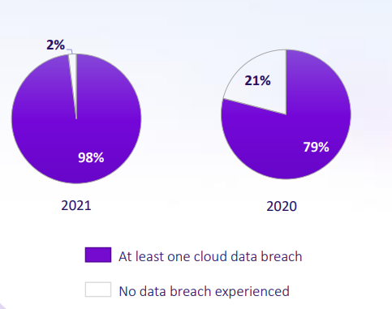
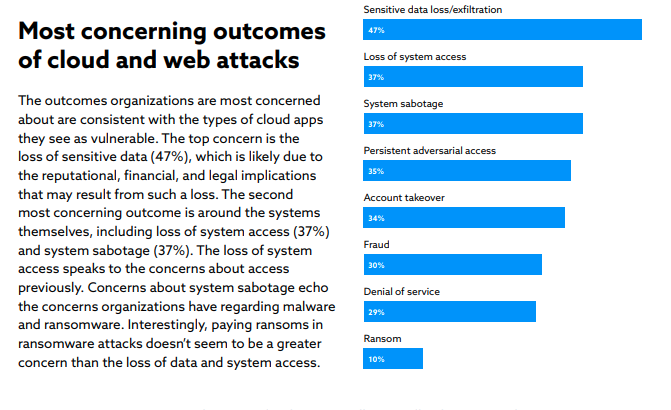
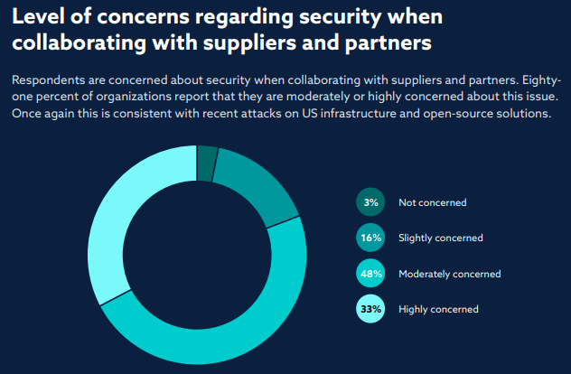
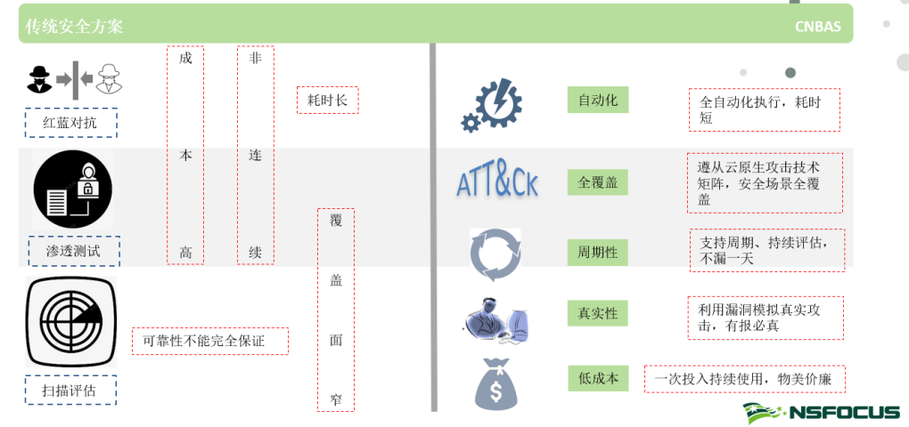
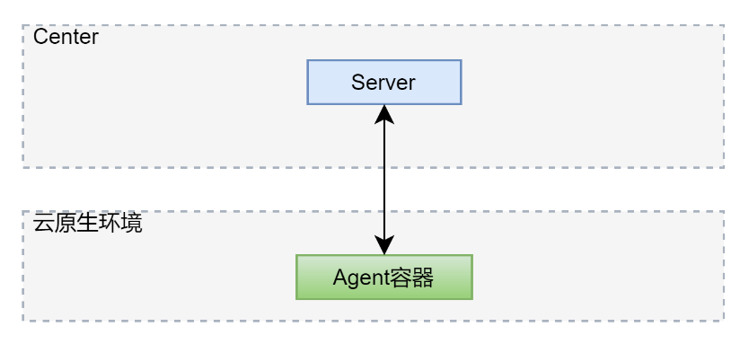
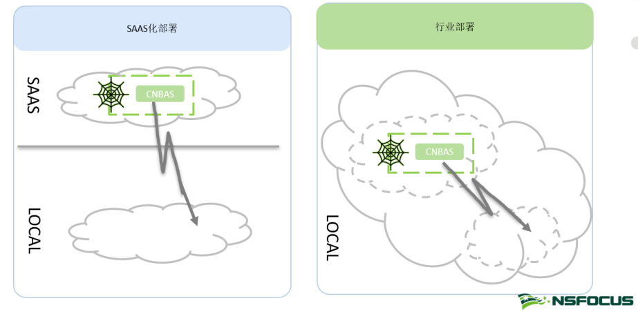

专题 云原生 标签 云原生安全 首发于创新研究院官方博客 摘要
业务上云已经成了趋势，上云即配置安全防护产品已然成了必要步骤，然而从来没有绝对的安全，如何早于攻击者发现云原生环境的风险以及检验云原生安全能力是否生效，这成了市场亟待解决的问题，今天我们为大家介绍的“云原生BAS”力图解决这一难题。
- 简介
说到云原生BAS，我们必须要先了解什么是BAS，下面逐步来聊一聊：
- 1.1 什么是BAS？
Breach and Attack Simulation（BAS）即入侵与攻击模拟，即通过对环境进行一致性、端到端、持续性、真实无害化的攻击模拟，以评估和验证环境的安全以及安全控制项的有效性，并且提供可视化的结果展示[1]。
Gartner在2017年抛出了如何实际测试组织的整个安全性问题，随即引入了BAS技术[2]。从BAS出现到在大众视野到逐步产品化的今天，关于BAS的讨论从未停止，如“实际测试”限定而引入测试的真实性讨论：到底应该有多真实、哪些应该是被模拟的等等。在众多对此领域感兴趣或者相信BAS是解决该问题的有效方法的组织或个人的推动下，BAS的轮廓渐进明晰。
- 1.2 什么是云原生BAS？
Cloud Native Breach and Attack Simulation(CNBAS) 即云原生入侵与攻击模拟，顾名思义，这里是对测试环境镜像了限定，测试的对象是云原生环境。当然这里并不单单指集群环境。聊到这里，笔者认为云原生这个词我们有必要再看看，如图1所示，有利于构建、运行和充分利用云计算模型优势的技术/方法都是云原生相关。故CNBAS的测试应包含代码的安全开发、代码仓库、DevOps环境、镜像、镜像仓库等等一系列上下游环节和对象。

图1 云原生概念发展图
经过前面的介绍，大家应该对CNBAS和传统BAS都有了些许了解，那么CNBAS存在的意义是什么？它是否能解决传统工具处理不了的问题？传统BAS能否替代CNBAS？带着诸多疑问，接下来我们继续探讨。
-
为什么需要CNBAS
- 2.1 市场需要
随着全球数字化转型浪潮的推进，政企业务纷纷上云，上云的市场需求，必然推动云基础设施的持续发展，如图2所示[3]，IDC2021年的报告显示，接受调查的云组织正在花费大量的费用去发展云基础设施。

图2 云基础设施花费
这一数据也恰好和云原生市场应用的趋势相呼应，如图3所示，Datadog 2021年10月的报告数据显示在过去一年中，使用OpenShift的组织增加了28个百分点[4]。作为云原生容器编排管理平台的一个企业版本，这表明不少的企事业组织正在将更多的应用迁移到云原生环境中。

图3 OpenShift市场使用趋势
毋容置疑，云基础设施的完善和业务上云会带来诸多便利，但同时也使云上安全问题出现在大众视野里。如图4所示，2021年Ermetic 和IDC的报告显示，超过90%的云使用者在过去的一年半时间里发生过云数据泄露的事件[5]。当然这不仅局限于数据泄露，还有其他具有代表性的攻击事件: 如2018年RedLock披露的特斯拉K8S挖矿事件、2019年Palo Alto Networks披露的Graboid蠕虫挖矿传播事件、2020年微软检测到大规模的K8S挖矿事件等。

图4 云攻击调度
云上业务被攻击后造成的损失是不可估量的，如图5所示[6]，轻则缴纳赎金，重则数据泄露、业务中断，给组织造成经济和名誉上不可挽回的损失。

图5 云上业务和网站被攻击后的结果
面对如此严重的后果，云上业务拥有者，也会部署对应的安全产品，但即使部署大量的安全防护产品也不能完全打消管理者的疑虑，如何确保云原生环境的安全性和安全能力的有效性，能够早于攻击者发现环境的漏洞风险，这成为了市场迫切需要解决的问题。

图6 组织合作中对安全问题的态度的统计
- 2.2 传统的工具无法满足
如何测试云原生环境的安全性？如何测试安全能力控制项是否生效？笔者首先想到的是渗透测试、红蓝演练、漏洞评估。如图7所示，传统方案面临着成本高昂、连续性差、耗时长、覆盖面窄，无法保证一致性和可靠性等其中的一项或几项问题，而CNBAS恰好可以解决这些问题。

图7 云原生环境评估工具对比
那么现有的传统BAS解决方案是否可以解决云原生场景下的这些问题呢？答案是否定的，虽然传统BAS具备上述所有特性，但传统BAS很少能够对云原生环境做到精细化和全面覆盖的攻击模拟。CNBAS专注于云原生场景下的攻击模拟，以集群安全为例，传统的BAS无论从外界资产进行发现和突破，还是部署各种形式的代理到集群内部，其攻击的方向和对象大多是粗略的（如以IP资产或者单独应用为维度的攻击），很少能够对内部的隔离控制项，或者微服务交互项、以及容器内部进行一致性的精细化攻击。
- CNBAS怎么做
Gartner在2017年的报告中对BAS做了相关的技术描述，即允许在组织环境中部署软件代理、虚拟机或通过其他形式持续并一致地对环境进行攻击模拟的工具[7]。那么在云原生场景下，BAS怎么设计更加合适，毫无疑问，有一个永远不会错的回答--云化的方式。
- 3.1 攻击方式
什么是云化的方式？从Gartner对其的技术定义来看，向客户环境投放一个容器形式的代理无疑是最简单的实现方案，如图8所示，通过代理和Center进行交互达到对环境进行内部攻击模拟的目的。但笔者认为应该还有其他的答案，如无代理模式或许是云化场景下的一个友好的方式。

图8 容器代理模式
- 3.2 上下游的联动
笔者以为，CNBAS应该具备和上下游应用或者工具进行联动的能力，以做到精细化控制环境和验证控制项目有效性。考虑到云原生环境和安全产品的多样性，插件化的联动方式或许是一个不错的选择。
- 3.3 用于攻击的武器
探讨这个问题的前提是模拟的对象是攻击，当然这里并没有排斥对组织环境进行模拟，这需要按照场景去选择，这里暂时先探讨前者。
- 3.3.1 武器需要经过无害化的处理。
至少产生的结果在可控的范围内，比如说在容器内逃逸后做了一个反弹shell，那么可以暂时反弹到内部固定的容器内或者其他可控且无法被其他程序利用的方式。
- 3.3.2 可以对武器进行原子化标记，便于根据场景或者机器学习对攻击链路进行编排。
依托红蓝对抗等真实的攻击经验编排武器攻击链基线，以基线为中心进行组合学习，针对新链路进行标注，训练学习，最终以原子武器结合环境信息智能编排。值得一说的是机器学习的引入也许可以将原子武器进行变异，这是一个值得期待的方向。
- 3..3.3 武器攻击的过程需要可追溯、可回放。
这里考虑的是攻击的可信度，如是否真实攻击成功、是否真实无害等，做到过程可溯源和可回放可以很好地减少这方面的疑虑。回放不用过多探讨，至于如何做到可追溯，我想日志和审计等常见方法也是不错的选择。
- 3.4 部署方式
在笔者看来，支持SaaS化的部署方式是必要的，但考虑到国内和国外的云使用场景和份额，行业部署或者单点部署也不得不加以考虑。

图9 CNBAS部署示意图
- CNBAS做什么
这里主要是想简单探讨功能模块的问题，这就涉及到要做成傻瓜照相机还是机械单反的问题。结合市场和用户视角来看，笔者倾向于前者，以下的主要功能也是以此为前提进行的探讨。
- 4.1 对云原生环境资产的管理
CNBAS允许从不同的阶段进行攻击模拟，故掌握被攻击资产的关键信息是有必要的（如特定的账号或者口令，便于跳过发现和爆破进行内部攻击）。同时依托录入的信息可以和对应的资产进行交互，获取一定的信息便于资产的监控。
- 4.2 攻击任务
以整个云原生环境为目标进行攻击任务的管理，任务具有一致，持续性、精确攻击范围、自动化等特性。
实施攻击中，可以对攻击输出进行实时查看跟踪，攻击结束后可以查看历史攻击链的日志，可以选择攻击链路进行回放攻击。
- 4.3 报表
以云原生环境为维度，统计完成攻击的任务，形成整体环境的报表，报表除了常规的漏洞统计、趋势、详情和可执行的修复建议外，笔者认为多维度展示整个环境的安全成熟度是一个不错的补充。
- 4.4 上下游联动
攻击前的情报信息，以及攻击后的真实风险处置等等都可以联动上下游安全产品进行交互，如对于攻击成功后的风险，可以联动安全能力推送或者下发对应的策略消息，以此往复，形成端到端的闭环。
- 4.5 态势
除已经提及的风险联动处置外，以整个云原生环境为维度进行统计，如对工具管理的环境进行风险汇聚形成分布和趋势等在笔者看来也是一个增色模块。
- 总结
以上是笔者对CNBAS大致的一些想法，由于视野有限，其中难免会有认知上的局限，故欢迎有兴趣的朋友在后台留言一起探讨，后期的文章将会带来更详细的内容。
参考文献
[1] Gartner.Threat Simulation – How real does it have to be?
[2] Gartner.How to Actually Test Security
[3] IDC.State of Cloud Security 2021
[4] Datadog.10 Trends in Real-World Container Use | Datadog
[5] Ermetic.State of Cloud Security 2021
[6] CSA.Cloud and Web Security Challenges in 2022
[7] Gartner.Hype Cycle for Threat-Facing Technologies 2017